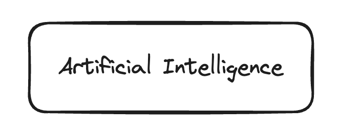

Introduction #

The Green AI Reference Model presents a comprehensive framework aimed at guiding stakeholders across the AI lifecycle to enhance the sustainability of AI systems. This model is pivotal in advancing the dual objectives of Green AI: mitigating climate change and minimizing environmental impacts. It achieves this through two principal approaches: “Green by AI” and “Green in AI.”
“Green by AI” refers to leveraging AI technologies to foster environmental sustainability, such as optimizing energy use or enhancing waste management. Conversely, “Green in AI” emphasizes developing and implementing AI solutions that inherently consume fewer resources and generate less waste. The latter is the primary focus of the Green AI Reference Model, which seeks to significantly lower CO2 (equivalent) emissions and conserve critical resources including water, rare minerals, and others.
This model not only advocates for resource efficiency but also champions the adoption of practices that reduce the environmental footprint of AI operations, thus steering the AI community towards a more sustainable and environmentally friendly future.
Why does this model exist/why is it necessary #
There are many guidelines and ways to measure how environmentally friendly AI systems are, but they often rely on wrong assumptions or inaccurate data. This can lead to wrong conclusions. The Green AI Reference Model is important because it addresses these issues. It clearly lists out the factors that affect how sustainable AI technologies are, helping everyone involved make better, clearer decisions. This model helps set consistent standards to judge the environmental impact of AI, making sure our efforts to make AI greener are based on solid science and are truly effective.
How is this Model structured? #
The model began with an introduction that sets the foundation by distinguishing two key approaches: “Green by AI” focuses on leveraging AI technologies to enhance environmental sustainability, while “Green in AI” centers on developing AI solutions that inherently consume fewer resources and generate less waste.
Following the introduction, the model details the methods for quantifying the environmental footprint of AI systems. It emphasizes the importance of accurate measurements to understand and mitigate ecological impacts effectively, covering various sources and factors influencing the environmental impact of AI technologies.
The core of this model is dedicated to exploring the influence factors that affect AI sustainability. These are organized into five primary categories: Use Case, Model, Data, Hardware, and Tools. Each category scrutinizes specific components or practices within AI systems that significantly affect their environmental impact, from the energy consumption of data centers to the carbon footprint of hardware production and the ecological effects of electronic waste disposal.
Additionally, the document discusses the interplay between these influence factors. It highlights how these elements do not operate in isolation but interact in complex ways that can either amplify or mitigate their individual impacts. This section underscores the necessity of an integrated approach to optimizing ecological sustainability by aligning model complexity with use case requirements, optimizing data characteristics for efficient hardware usage, and selecting appropriate tools that enhance sustainability.
In the discussion section, the document would ideally explore the real-world applications and challenges of implementing the Green AI principles. It addresses potential barriers to adoption, such as technological limitations, economic constraints, and the need for industry-wide standardization to ensure broad implementation of sustainable practices in AI.
How to apply this model? #
This Reference Model can be applied in several ways. First, it can help improve both existing and new AI applications. It does this by providing a detailed overview of the factors that affect environmental impact and showing how to measure this impact. Second, the model serves as a guide for future research. It outlines the unresolved issues that need to be addressed to develop truly Green AI. Finally, it offers non-technical stakeholders, like policymakers and business leaders, a clear understanding of the current challenges. This helps them create informed policies and strategies that support sustainable AI development.